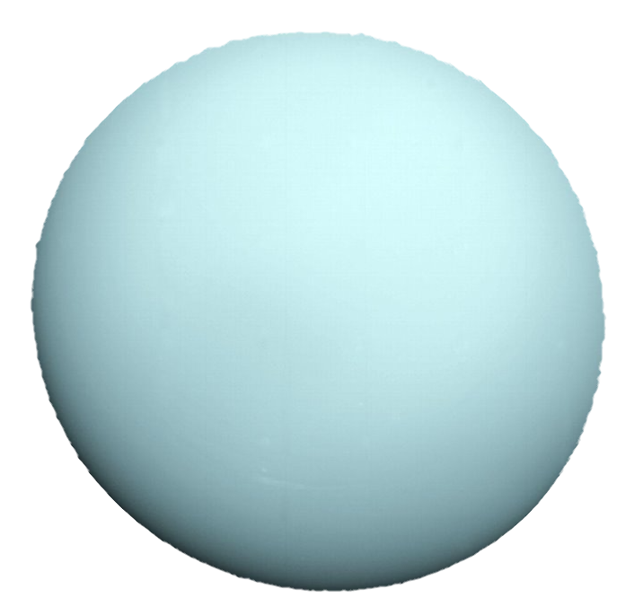

Volver
|  |
DefiniciónEl dios Urano, padre de Saturno y abuelo de Júpiter fue en la mitología griega el dios del cielo. Sin embargo, cuando los griegos se referían al objeto que brillaba en el firmamento con este nombre, no se estaban refiriendo a un planeta, sino que creían que se trataba de una estrella. Para constatar que Urano se trataba de un planeta hubo que esperar hasta el año 1781, cuando fue descubierto por Sir William Herschel, quien quiso bautizarlo en honor al rey Jorge III de Inglaterra. Georgium Sidus, el nombre propuesto por Herschel para este gigante de hielo no prosperó, y la comunidad astronómica acordó en el año 1850 que este adoptara el nombre de Urano, un nombre de origen mitológico en consonancia al resto del planetas del sistema solar. Características principales del planeta UranoUrano es un planeta muy diferente a todos los planetas rocosos o telúricos y los gigantes gaseosos del sistema solar, aunque comparte una característica especialmente excepcional con el planeta Venus, y es que rota de oeste a este. Con la salvedad, eso si, algo que lo hace mucho más especial, de que gira en un ángulo de casi 90 grados desde el plano de su órbita, lo cual hace que Urano parezca girar de costado, orbitando alrededor del Sol como una bola rodante. El gigante de hielo está rodeado por 13 anillos tenues, los cuales forman el segundo sistema anular que fue descubierto en el sistema solar tras el de Saturno. También cuenta con 27 satélites naturales conocidos, los cuales reciben su nombre en honor de los personajes de las obras de William Shakespeare y Alexander Pope. Estructura interna, geología y composición del planeta UranoUrano es el séptimo planeta en distancia al sol, el tercero más grande, el cuarto más masivo y el segundo menos denso del sistema solar. Con un radio 25.362 kilómetros, hasta 4 planetas como en nuestro cabrían en fila a lo largo de la línea de su ecuador. Se trata del primero de los gigantes helados de nuestro sistema planetario y como gigante de hielo carece de una superficie definida. En cambio, está compuesto por una especie de "hielo" fluido de agua, amoníaco y metano en su manto. De hecho, el manto helado de Urano no está compuesto de hielo en el sentido convencional, sino que es un fluido caliente y denso formado por agua, amoníaco y otros volátiles. En el interior del planeta los modelos predicen un núcleo rocoso de aproximadamente la mitad de la masa de la Tierra y de un tamaño del 20% del total del planeta. De Urano también destaca la inclinación de su eje, casi en ángulo recto con respecto de su órbita alrededor del Sol. Estas es la causa directa de que las estaciones en Urano sean las más extremas del sistema solar. Así, durante casi una cuarta parte del año de Urano (de 84 años terrestres), el Sol brilla directamente sobre cada polo, sumergiendo a la otra mitad del planeta en oscuro un invierno de 21 años. En el gigante gaseoso, además también llama la atención por su extraño e irregular campo magnético. Al contrario que suele suceder, el campo magnético de un planeta suele estar alineado con la dirección de su rotación, sin embargo, en Urano se encuentra desviado unos 60º. La atmósfera de UranoLa atmósfera de Urano está principalmente conformada por hidrógeno y helio, una pequeña cantidad de metano y algunas trazas de agua y amoníaco. Es precisamente, el metano el que le da a Urano su característico color azul. La atmósfera de Urano es muy fría: en ella se pueden alcanzar temperatura de hasta -224ºC. Además las últimas observaciones del planeta han revelado que durante algunas épocas del año, esta puede exhibir nubes dinámicas, movidas por vientos que pueden alcanzar los 900 kilómetros por hora, los cuales en el ecuador giran en sentido contrario a la rotación del planeta, y en los polos en la dirección de la misma. Esta nubes se situarían, como sucede en Júpiter, en varias capas, quedando por debajo las compuestas por agua y en una altura superior las conformadas por metano. La exploración del planeta UranoA día de hoy la exploración del planeta Urano se ha realizado casi exclusivamente mediante la observación a través de telescopios. La única sonda que ha visitado el planeta fue la Voyager 2 de la NASA, la cual se acercó a su punto más próximo al planeta el 24 de enero de 1986, durante su viaje al exterior del sistema solar. La sonda descubrió 10 nuevas lunas, además de dos anillos hasta entonces desconocidos del planeta y su campo magnético. En el futuro próximo, se baraja la posibilidad de enviar una nueva misión a Urano. El concepto de la misión fue bautizado como Uranus Orbiter and Probe, y aunque si bien no se trata de un proyecto todavía aprobado, sobre el papel se estipula que la misión sería lanzada entre los años 2031 y 2038, dependiendo del momento de su aprobación, y que discurriría a lo largo de 19 años. Curiosidades sobre el planeta Urano
|
Fuente: National Geographic
Volver